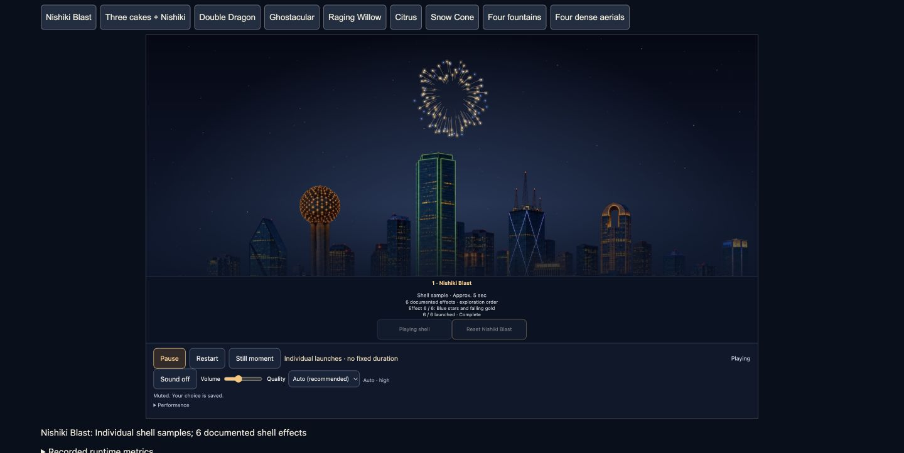
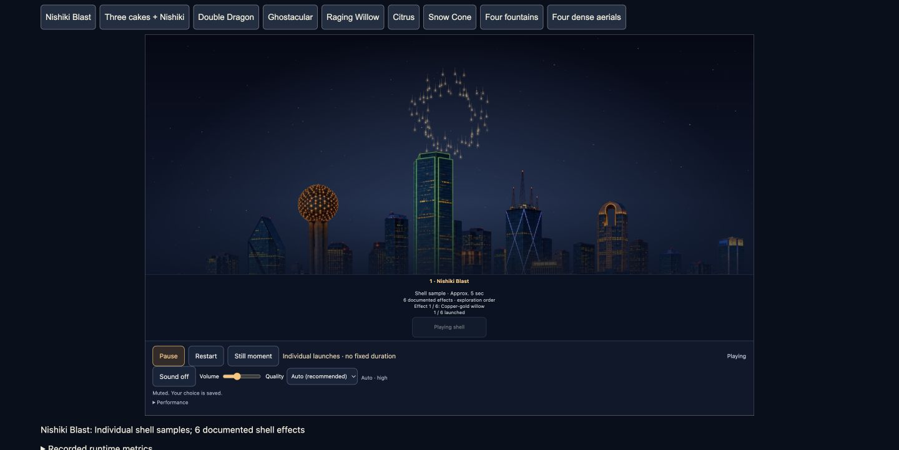
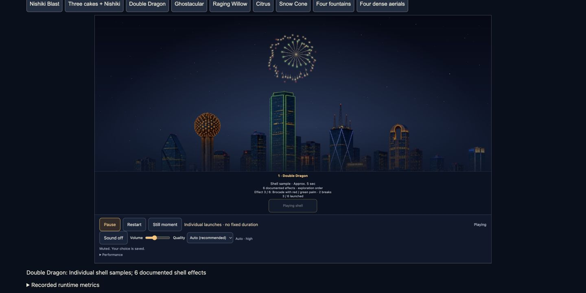
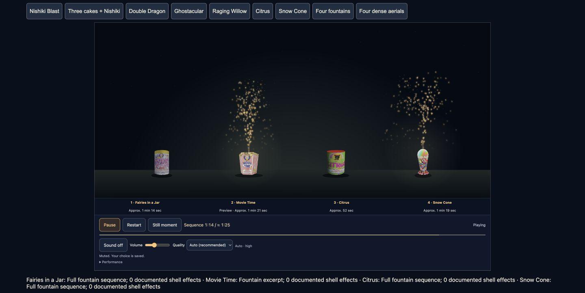

Local review · September 27, 2026. Open the Playground · Sources and coverage · Validation and measurements
Nishiki Blast now cycles through six documented effects. Four new products bring coverage to 27 profiles. These recordings use the production renderer and real controls; audio was muted.
First launch is automatic; the next five are manual. Effect order is for exploration, not official package numbering. Launches and falling trails remain behind the building silhouettes.
Bump Bear, Band of Brothers and Raging Willow run alongside Nishiki Blast. The last shell launches after the cakes finish.




Desktop Chrome measurements and compact browser review are documented separately from native validation. Native device/simulator review remains blocked by CoreSimulator access.